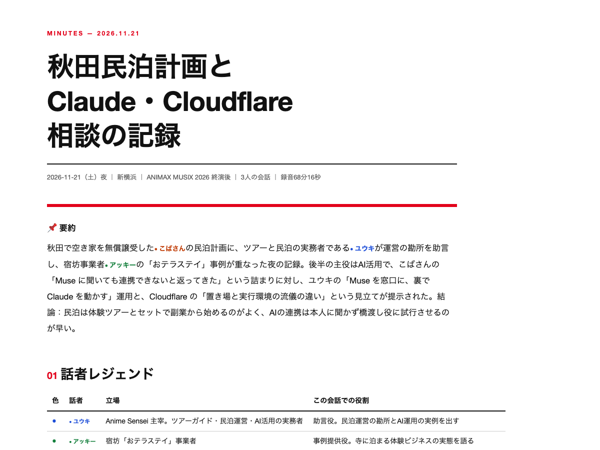
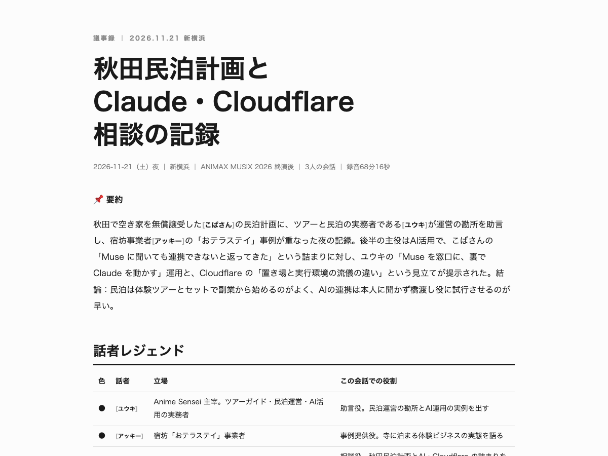
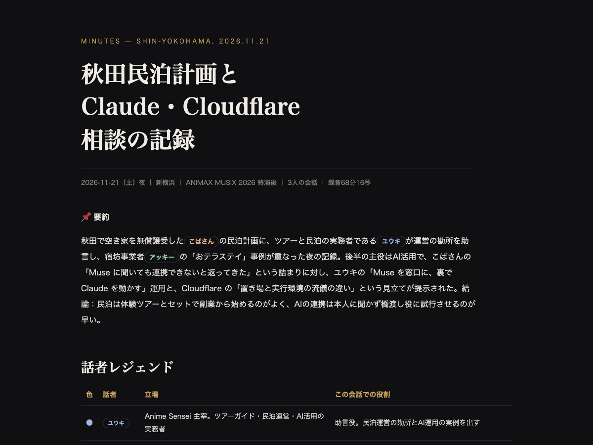
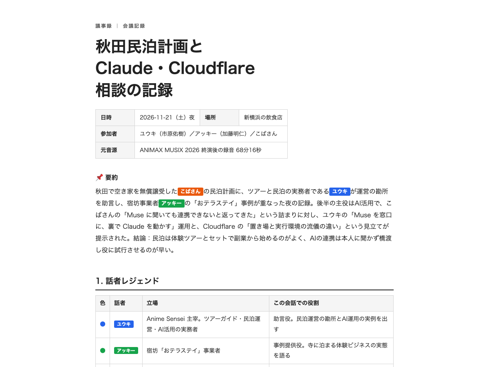
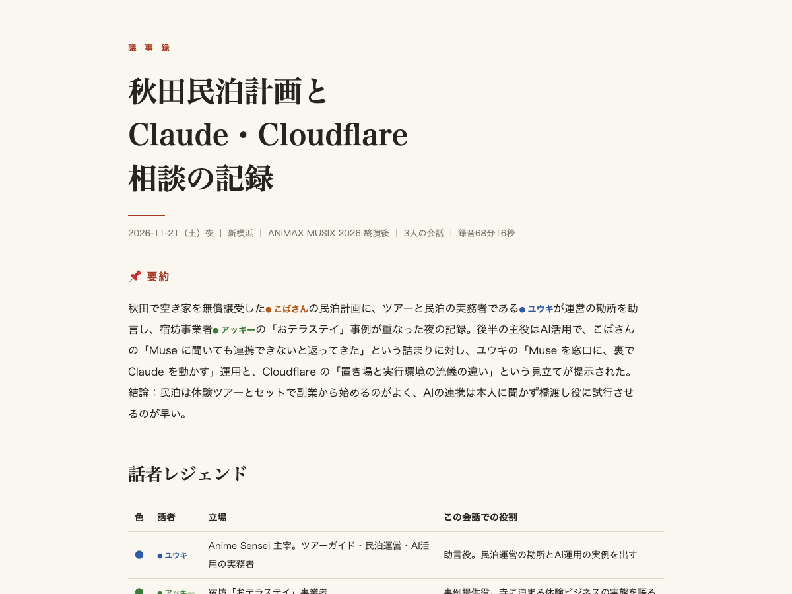

議事録「秋田民泊計画とClaude・Cloudflare相談の記録」の全文はそのままに、「無駄な配置が多い」との指摘を受けて削ぎ落とした新デザイン5案です。共通の削り方：重複するメタ情報はヒーローの1行に集約、装飾だけの帯とボックスを廃止、余白は均一なリズムだけに統一。R1を採用し、正本ページに反映済みです。旧デザイン5案はこちら。

厳密なグリッドと赤1色。節番号と罫線だけで組み、タイポグラフィで魅せる案。要約は帯でなく赤の太罫で受ける。

白黒基調に朱赤だけ。話者チップの色も落として文字だけで判別し、★だけに色を残した最も要素の少ない案。

黒基調に明朝の見出しと金の差し色だけ。枠とチップの塗りをやめ、静かに締まった高級感の案。

正式なレポートの体裁。冒頭に項目表、見出しは番号と罫線だけ。装飾ゼロで読みやすさ最優先の案。

生成りの紙面に明朝と朱。余白は活かすが間隔は均一に締め、縦の流れが間延びしない案。